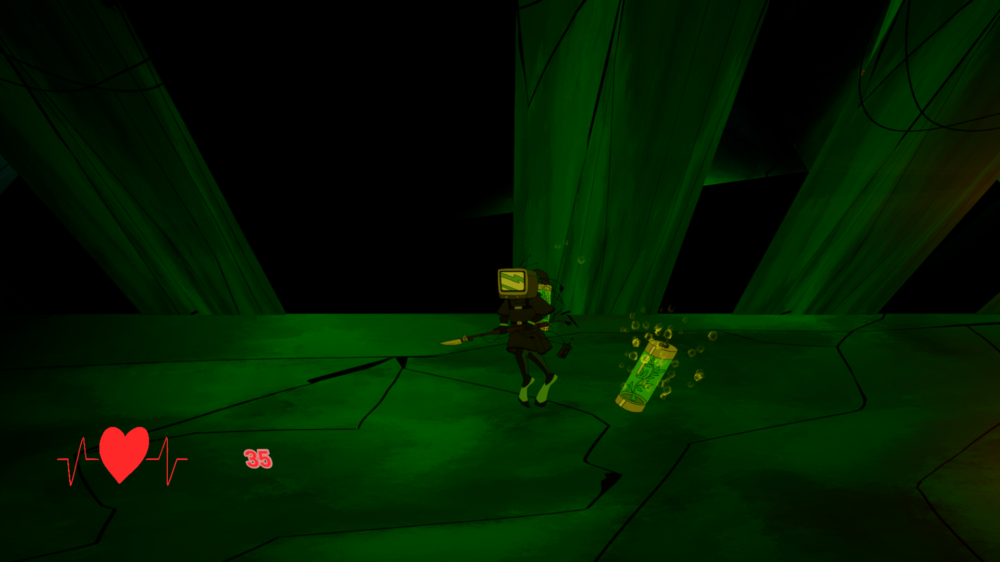
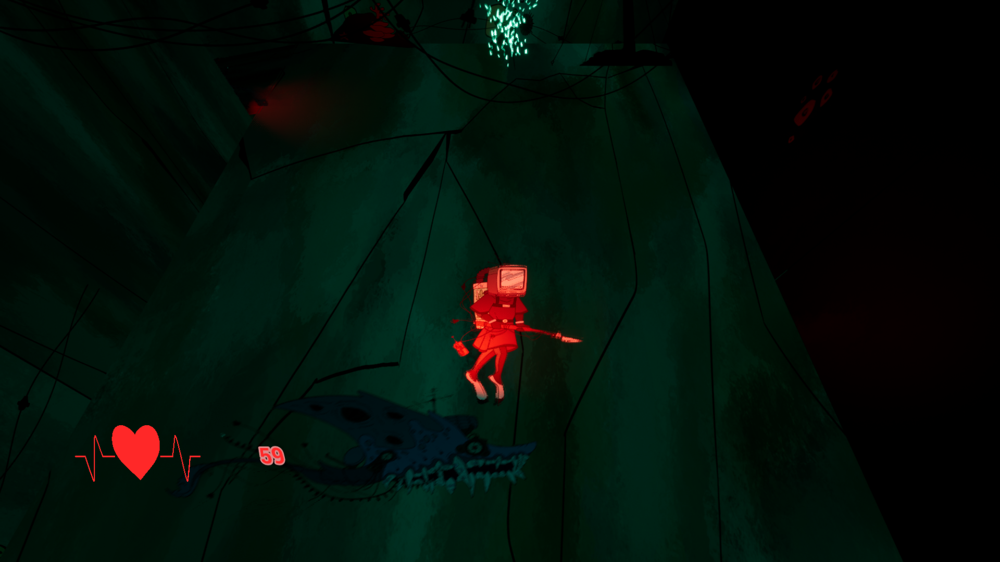
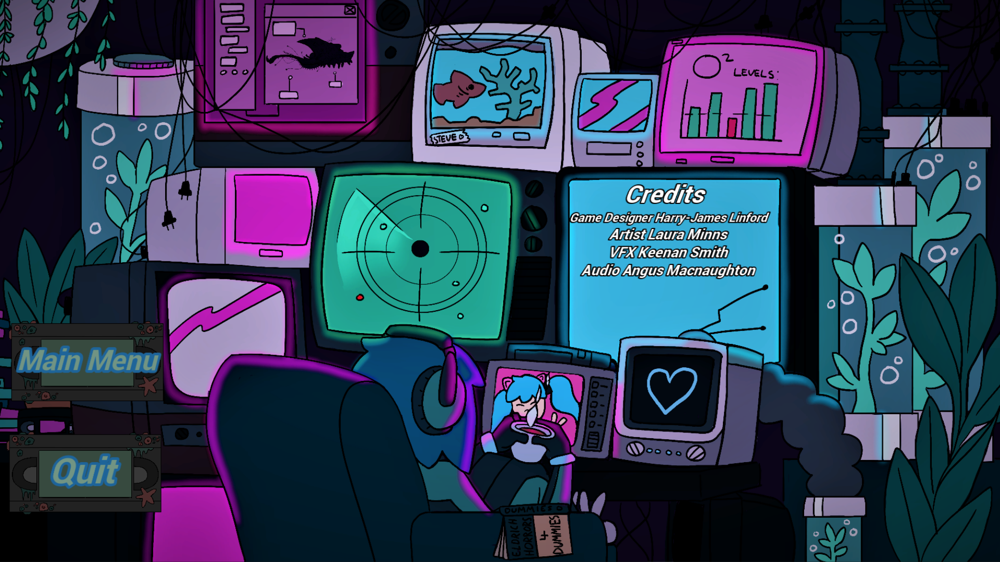
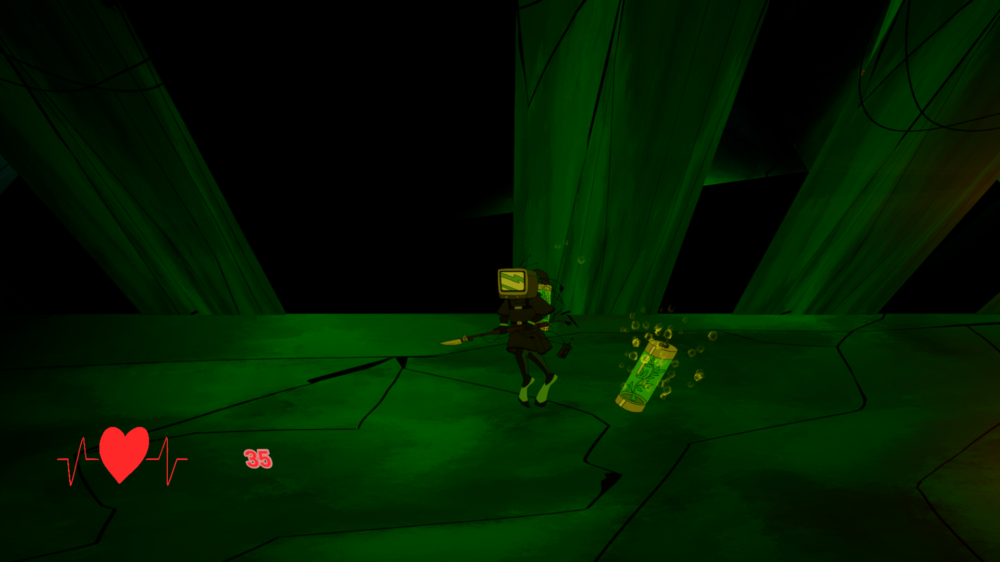
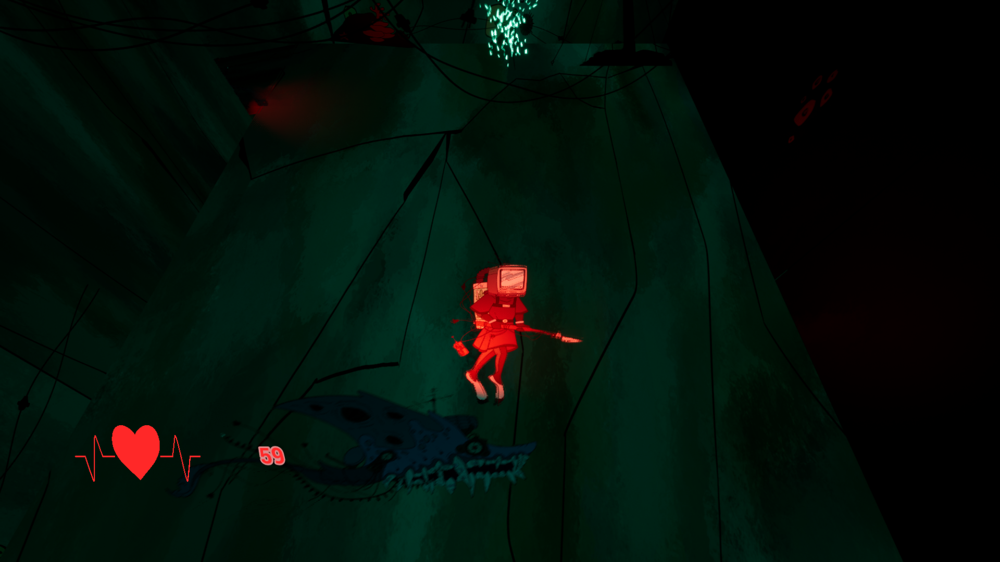
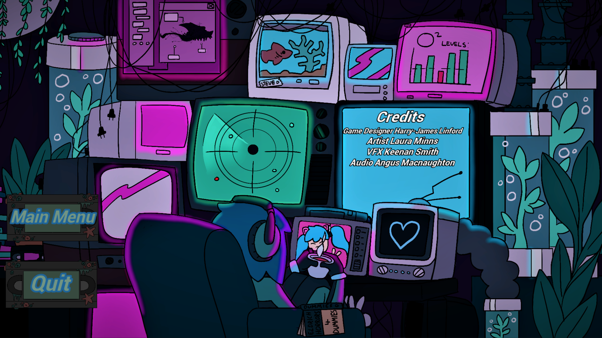
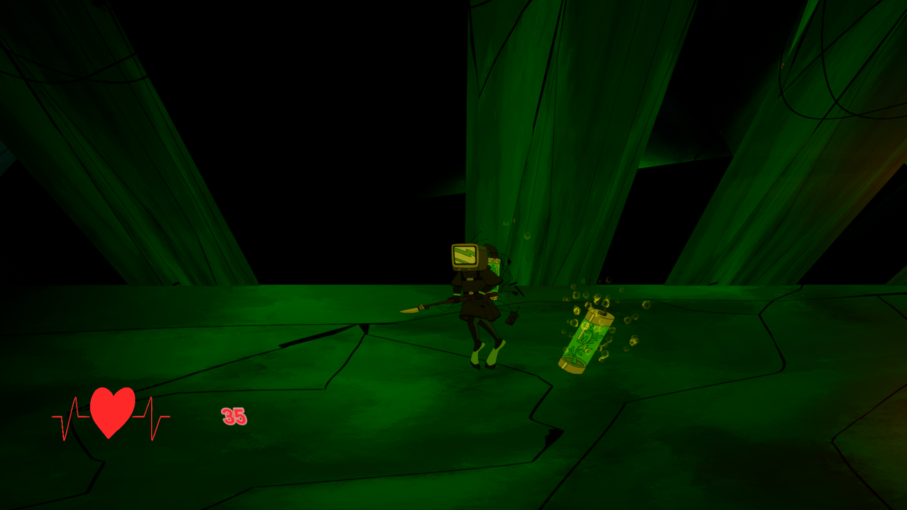
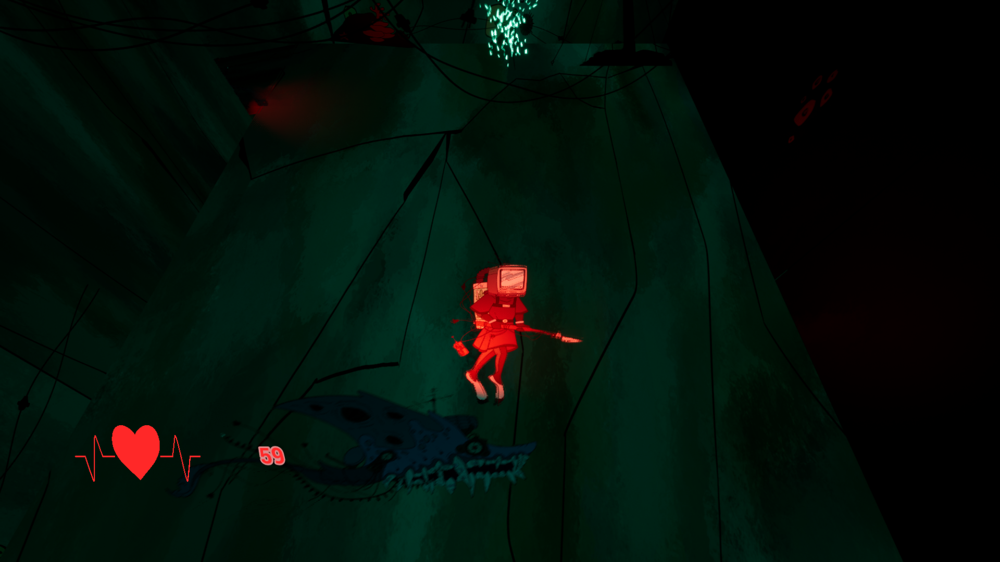
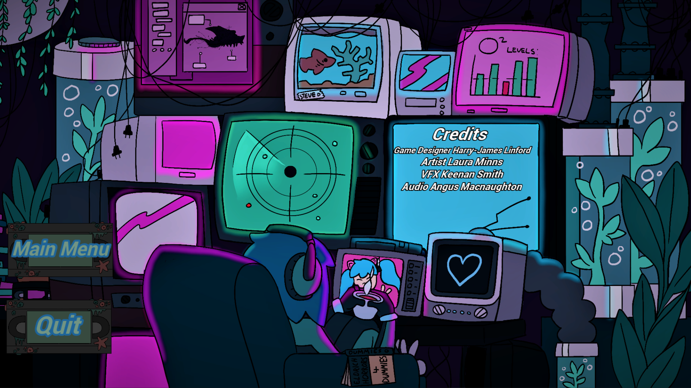

Gallery
Images
 





Created for MiniJam 125/MiniJam 125.
MiniJam 125's theme was "signal".
The original concept was to make the use of a radar, it would detect our player and alert enemies to our character's presence.
The limitation of this jam, was "everything is tied to the rhythm". Both Tv's that flash to provide light a heart rate system. It allowed the world and the protagonist to feel connected.
If you suffer from epilepsy we would advise you to not play or watch any content from this game or take necessary risks when doing the following.
Static is lost at sea, around them are the horrors of other units like them self, strung up and left to rot. The other units still have some power and will attempt to light the way for static to reach their home. The search light will increase Static's heart rate, the TV's will also flicker in time with the heart rate. Watch out for the creatures of the deep, is this how the others met their end?



Please check out my team's work:
Art/Story:
Audio: